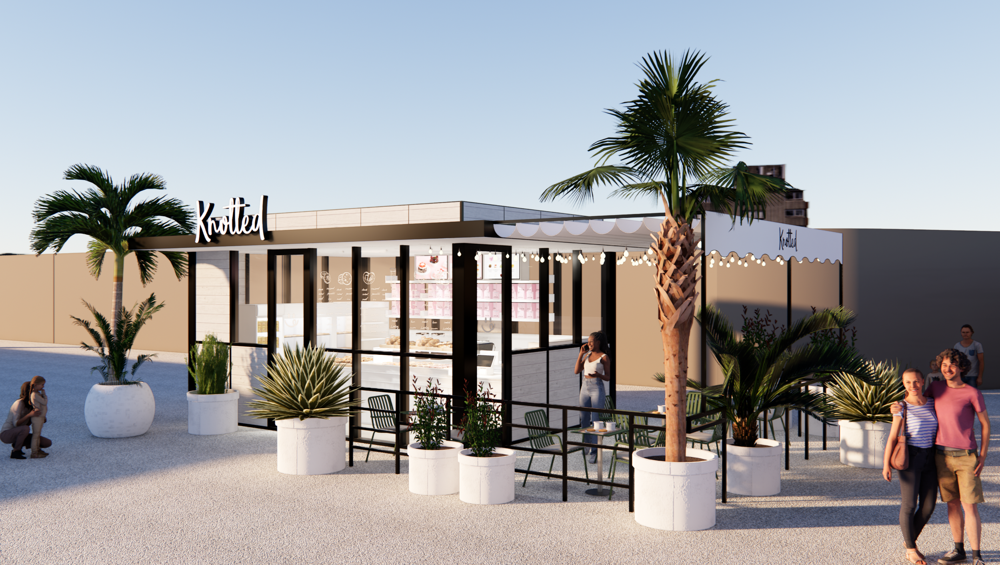
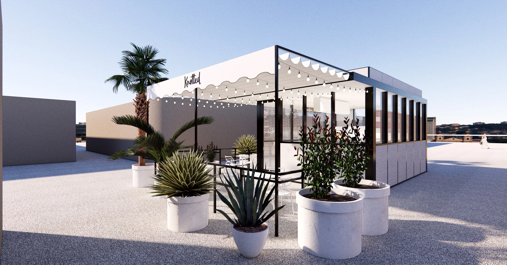
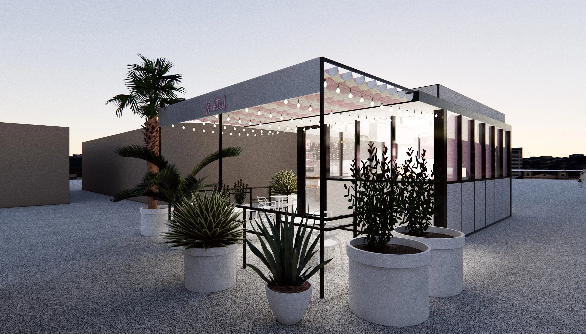
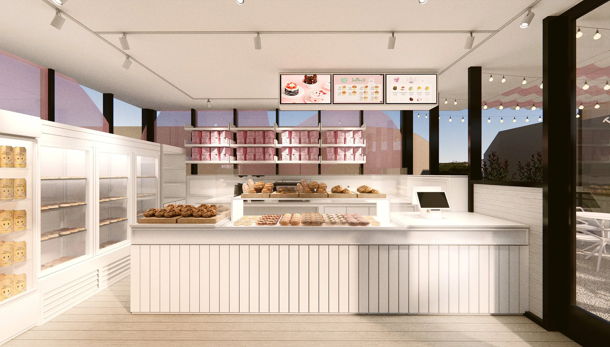
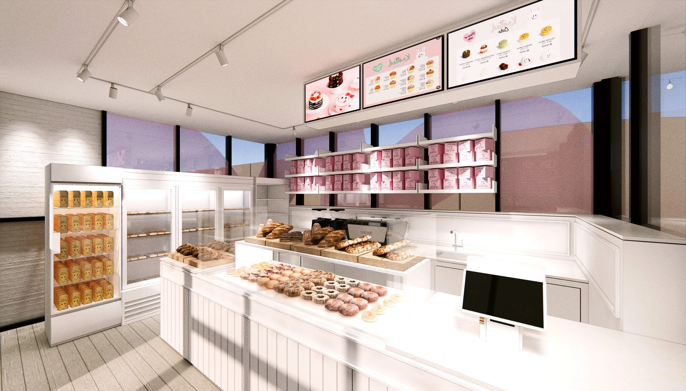
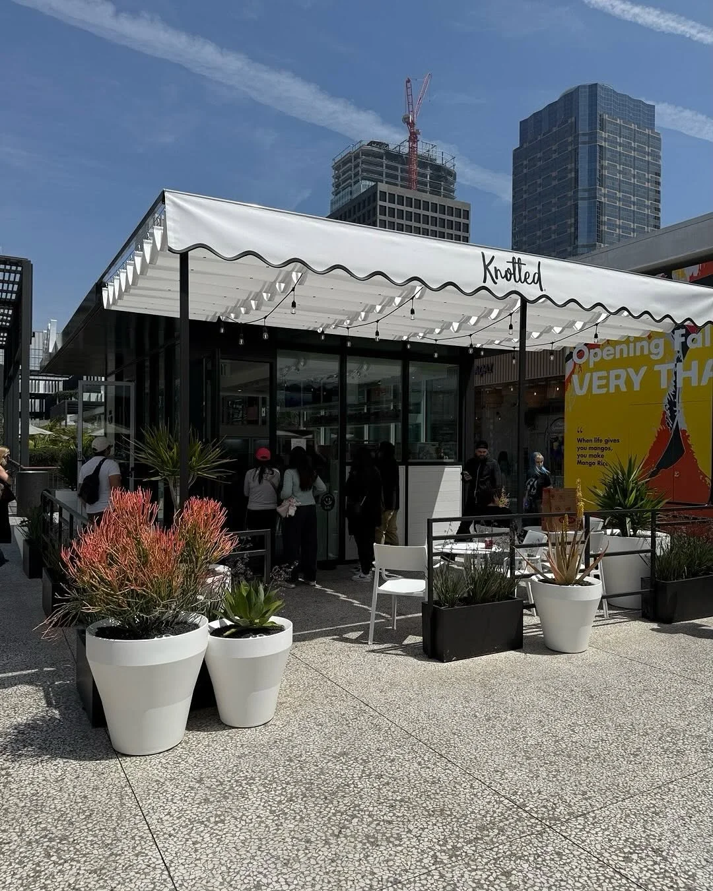
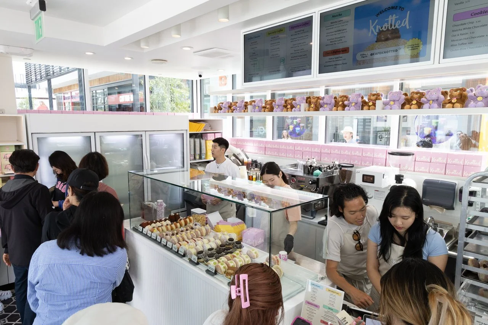
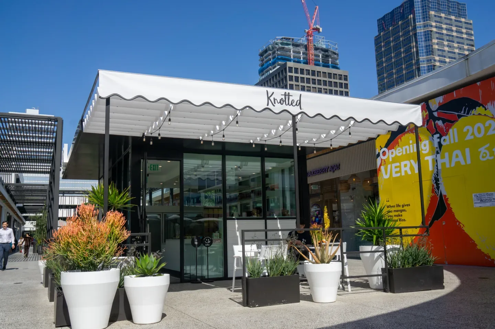
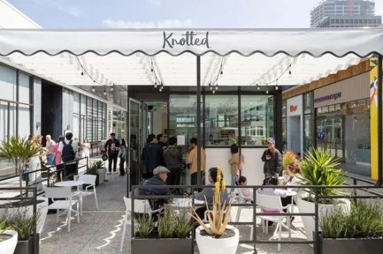
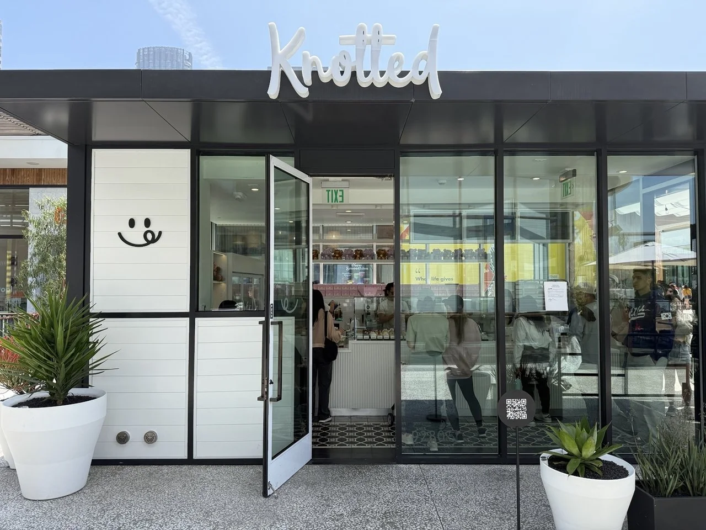

Knotted Westfield Century City
Knotted’s first US location — translating a Korean dessert brand for an American mall audience.

- Client
- GFFG
- Location
- Los Angeles, United States
- Year
- 2024
- Role
- Creative Director
- Scope
- Creative direction, retail concept, brand translation for the US market
The brief was translation, not replication. Knotted’s playful, approachable identity had to survive a move into Westfield Century City, where the surrounding retail language is cleaner and more restrained than in Seoul.
The design keeps the signature brand elements as focal points and lets modern lines carry everything else, so the store reads as an experiential destination to a shopper who has never heard of the brand — and as unmistakably Knotted to one who has.








